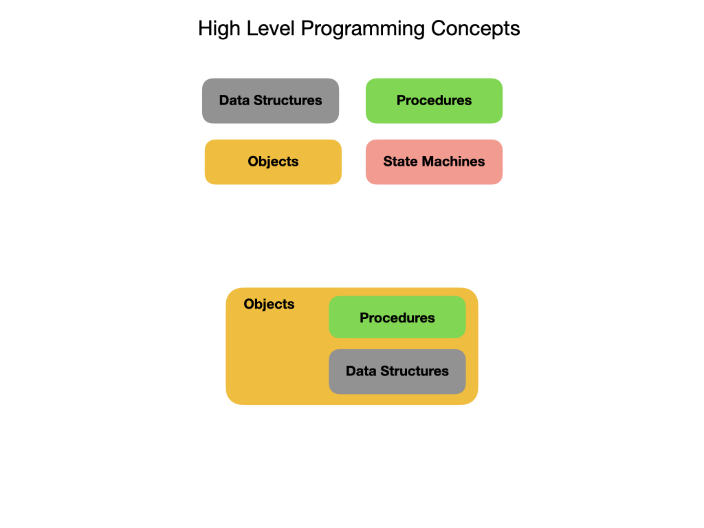

Programming Basics
Important
Please Note – you are expected to have at least a basic understanding of Java to be able to attend programming training!! As the training material is presented in Java, you must understanding Java to understand the training. Each season we spend most of our training time teaching you how to use Java in the FRC World. As such, there is not a lot of time left to teach basic Java. Please come to the training season prepared with an understanding of Java. If you feel you need to brush up on your Java skills, please see the links below to websites that can help you with your Java skills.
This is a general introduction to programming. It covers concepts that apply to almost all Object Oriented Languages(OLL) although it will use Java examples to illustrate some concepts. The goal is to understand programming at a higher conceptual level, especially in the context of programming robots.
When programming in most modern languages you can break it down into four main categories; Data Structures, Procedures, Objects, and State Machines. Data Structures describe the physical attributes of a system and what its current state is. Procedures are blocks of code that perform tasks when they called. Objects are created to represent physical things or ideas in the real world. Objects encapsulate Data Structures and Procedures to describe its attributes and the tasks that it can perform. State Machines represent the state of a system at any point in time. As time passes a state machine usually transitions from one state to another.
The subsequent sections will go over each of these categories in more detail.